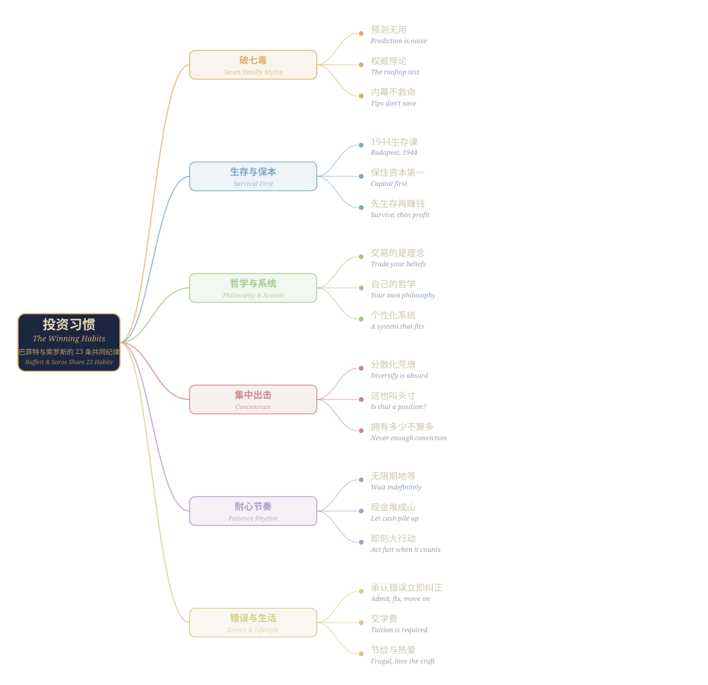

巴菲特与索罗斯的投资习惯
〇 · 书籍信息
基本信息
| 书名 | 《巴菲特与索罗斯的投资习惯》——一个反常识的对照实验：巴菲特买价低值高的企业并「永远」拥有；索罗斯做巨额杠杆交易——方法天壤之别，思考习惯却 23 条完全相同 |
|---|---|
| 作者 | 马克·泰尔：澳大利亚投资者与作家——以「信仰、行为、态度和决策方法」为解剖维度，再把 23 条习惯放到彼得·林奇等其他成功投资者身上「检验」，结果完美吻合 |
| 结构 | 第 1 章推翻「七种致命投资理念」（预测市场、权威迷信、内幕消息、分散化、赌博心态等）→ 第 2 章起逐条展开 23 个制胜习惯——从「保住资本永远是第一位的」到「投入你的资产」 |
| 体裁 | 对照式投资传记 + 习惯清单：它的独特视角是找「共同点」——两个方法相反的人共同做的事，才可能是成功的真正秘诀 |
| 一句话 | 两人从不预测市场、不为钱投资、把保住资本放在赚钱前面、从分散化到大持仓——方法相反，纪律同源：投资是思考习惯的复利。 |
一 · 核心主题总览
23 条习惯可以归并成四组母题：① 先破：七种致命理念
致命理念一：「要想赚大钱，必须先预测市场的下一步动向」——现实是 1987 年 10 月股崩前一个月，索罗斯还在《财富》杂志封面上看多美国股市，量子基金一周内剧损 3.5 亿多美元；他承认：「我在金融上的成功与我预测市场的能力完全不相称」。致命理念二是权威迷信——「如果你真的能预见未来，你是站在房顶上大声谈论它，还是闭紧嘴巴，开一个佣金账户然后大发横财？」
② 立一：生存与保本
习惯一与习惯二是同一枚硬币：「保住资本永远是第一位的」「努力回避风险」——索罗斯的风险厌恶来自纳粹占领匈牙利时期的生存课：「被发现后只有一种结局：死亡。而索罗斯只有一个目标：生存」。这个目标陪伴他一生：儿子罗伯特回忆父亲「在积累了数十亿美元的财产后，仍然在不停地谈论生存问题」——对索罗斯来说，一笔小损失都是退向生活底线的一步。
③ 立二：自己的哲学与系统
习惯三被立为分水岭：「有他自己的投资哲学，这种哲学是他的个性、能力、知识、品位和目标的表达——因此任何两个极为成功的投资者都不可能有一样的投资哲学」；范·撒普说：「你交易的不是市场，而是有关市场的理念」。失败者则「没有投资哲学，或相信别人的投资哲学」——大多数人不知不觉接受了别人的哲学，于是很容易随市场流行看法改变理念。
④ 立三：集中与耐心
习惯五的原文是「分散化是荒唐可笑的」：巴菲特：「分散化是无知者的自我保护手段。对那些知道自己在做些什么的人来说，它几乎毫无意义」；德鲁肯米勒做空美元建仓 10 亿美元，索罗斯问：「这也叫头寸？」——「当你对一笔交易有十足信心时，你必须全力出击……你拥有多少都不算多」。习惯十是它的另一半：「如果无事可做，那就什么也不做」——「我们已经有好几个月没找到值得购买的股票了。我们要无限期地等。我们不会为了投资而投资」。
二 · 第一段 破 —— 七种致命的投资理念—— 预测无用 · 权威破产 ——
预测：连大师都会错
致命理念一的证据是一场公开的打脸：1987 年 10 月股崩前一个月，索罗斯登上《财富》封面看多美股，10 月 14 日还在《金融时报》重申——一星期后量子基金随美股崩盘剧损 3.5 亿多美元，「他全年的盈利在短短几天内被洗劫一空」。作者的结论冷酷而公道：「在对市场的预测上，成功的投资者并不比你我强」；巴菲特则对任何预测毫无兴趣——「预测或许能让你熟悉预测者，但丝毫不能告诉你未来会怎样」。巴菲特和索罗斯可能都会毫不犹豫地承认：如果他们依靠市场预测，他们一定会破产。
◆ 语言学习 · 概念 · 致命理念
| 七种致命理念 | 预测市场 · 权威迷信 · 内幕消息 · 分散化 · 赌博心态…… |
|---|---|
| 1987 股崩 | 索罗斯的公开翻车：成功者也不比你我更能预测 |
| 熟悉预测者 | 巴菲特对预测的评价：只加深对人，无助于知未来 |
| 减法先行 | 本书方法论：先删错误信念，再立正确习惯 |
句型 ｜ 「我在金融上的成功与我预测市场的能力完全不相称。」——索罗斯的忏悔式自白：这句「贬低自己」的话其实是全书最高的表扬：他不靠预测也登顶了——你更不必。
权威与内幕
致命理念二的破法是一记逻辑重锤：「如果你真的能预见未来，你是站在房顶上大声谈论它，还是闭紧嘴巴，开一个佣金账户然后大发横财？」——以荐股为生的人，恰恰证明他并不真能预见。投资大师的共同答案：自己去调查（习惯九），只投资于你懂的领域（习惯七），不做不符合你标准的投资（习惯八）——权威、消息、他人推荐，全部被这三种动作挡在门外。第 1 章的功能由此完成：七种理念共同指向一个病根——把投资的责任外包给别人或运气。
◆ 语言学习 · 概念 · 责任外包
| 权威理念 | 「总有其他人会预测」——把判断外包的幻觉 |
|---|---|
| 房顶测试 | 真知未来的检验：他为何不闷声发财？ |
| 自己去调查 | 习惯九：把研究权收回自己手里的动作 |
| 你懂的领域 | 习惯七：能力圈纪律——不懂就是不懂 |
习语 ｜ 「站在房顶上大声谈论它，还是闭紧嘴巴，开一个佣金账户然后大发横财？」——一个二选一问穿整个荐股行业：真金白银的沉默者与高谈阔论的收费者之间，隔着能力的真相。
三 · 第二段 立（上）—— 生存课与保本—— 1944 布达佩斯 · 保住资本 ——
索罗斯的生存艺术
习惯一的灵魂来自一段与投资无关的历史：1944 年纳粹占领匈牙利，「作为纳粹占领区的一个犹太人，被发现后只有一种结局：死亡。而索罗斯只有一个目标：生存。这个目标将陪伴他一生，也是他的投资策略的根基」。父亲教他的课程是：「遵守法律是危险的，藐视法律才是生存之道……那对我的一生有不可磨灭的影响，因为我从一位大师身上学到了生存艺术。」多年后儿子仍困惑于他的执念——「他仍然在不停地谈论生存问题……考虑到我们的生活方式，这是很令人迷惑的」；索罗斯自己解释：「你认为我为什么会赚这么多钱？」——他承认有一点点害怕再度身无分文，就像 17 岁那样。
◆ 语言学习 · 概念 · 生存优先
| 生存艺术 | 1944 年的父亲课程：一切策略的前置条件是活着 |
|---|---|
| 一条底线 | 对索罗斯：任何小损失都是退向底线的威胁 |
| 一点点害怕 | 身无分文的记忆——恐惧被驯化成纪律 |
| 投注风格 | 生存优先的悖论：正因为怕死，才敢在确定时下重注 |
句型 ｜ 「你认为我为什么会赚这么多钱？」——反问句回答风险管理问题：他的激进与他的胆怯是同一件事——怕死的人反而活得久，活得久的人才有资格下大注。
保住资本永远是第一位
习惯一的正名：「相信最重要的事情永远是保住资本，这是投资策略的基石」；「永不赔钱」是巴菲特的个性与投资风格的基座——「钱赚来了就该保存起来，永远不能失去或花掉」。作者点破普通人的误读：「一般来看，保住资本就是不赔钱……保住资本已经内化到了他的投资方法中，是他所做的每一件事的一部分」——不是事后止损，是事前结构：买入价远低于价值，本身就留了安全垫。习惯二顺势成立：把保本放第一位，意味着你得是风险厌恶者——「如果你能像巴菲特和索罗斯那样……」（回避风险而不放弃机会）。
◆ 语言学习 · 概念 · 保本结构
| 保住资本 | 习惯一：投资策略的基石——先活下来再谈收益 |
|---|---|
| 永不赔钱 | 巴菲特原则：不是零亏损，是结构上不冒险 |
| 事前安全垫 | 低价买入自带缓冲——保本内化于方法 |
| 风险厌恶 | 习惯二：回避风险≠不冒险，是不冒不必要的险 |
习语 ｜ 「先生存，再赚钱。」——六字浓缩全书第一定律：市场里的所有排序错误，都源于把这个顺序颠倒——先想赚多少的人，最后算的是亏了多少。
四 · 第三段 立（中）—— 哲学、系统与集中—— 自己的哲学 · 这也叫头寸？ ——
发展你自己的投资哲学
习惯三被写成投资者的身份证：「有他自己的投资哲学，这种哲学是他的个性、能力、知识、品位和目标的表达」——投资哲学要回答三个问题：市场如何运转、价值如何评估、好投资的本质是什么。范·撒普的话被引为钥匙：「你交易的不是市场，而是有关市场的理念。如果你不知道你的理念是什么，你怎么会知道你在做什么呢？」反面样本清晰：「大多数投资者都持有一大堆从环境中吸收来的杂七杂八且常常相互矛盾的理念……由于他们的观念并非来自自己的思考，他们很容易根据市场的流行看法改变自己的投资理念」。
◆ 语言学习 · 概念 · 投资哲学
| 投资哲学 | 三问的答案集：市场 · 价值 · 好投资——决策的总开关 |
|---|---|
| 理念交易 | 范·撒普命题：每笔成交都是两个理念的碰撞 |
| 杂七杂八的理念 | 散装 beliefs：矛盾且随风——流行看法的俘虏 |
| 独一无二的哲学 | 推论：两个成功者的哲学必然不同——抄来的必不合身 |
句型 ｜ 「财富是一个人的思考能力的产物。」——安·兰德的句子被立为习惯三的题眼：投资成绩的差距，本质是思考习惯的差距——市场只是阅卷人。
分散化是荒唐可笑的
习惯五由一段华尔街传说担纲：德鲁肯米勒接掌量子基金后做空美元，建仓 10 亿美元；索罗斯问：「这也叫头寸？」——敦促他把头寸扩大一倍：「当你对一笔交易有十足信心时，你必须全力出击……如果你对某件事判断正确，你拥有多少都不算多」。巴菲特的理论支持更狠：「分散化是无知者的自我保护手段。对那些知道自己在做些什么的人来说，它几乎毫无意义」。作者随即补上平衡：集中不是莽撞——它以习惯三的哲学、习惯四的系统、习惯九的调查为前提；两位大师的「买多少都嫌少」，只发生在标准完全满足的极少数机会上。
◆ 语言学习 · 概念 · 集中出击
| 这也叫头寸 | 索罗斯的反问：信心十足时 10 亿都嫌少 |
|---|---|
| 全力出击 | 机会分层纪律：一般机会不动，极高确信重仓 |
| 无知者的保护 | 分散化的真实身份：对「不知道」的保险 |
| 集中≠莽撞 | 重注的前置条件：哲学 · 系统 · 调查三件套 |
习语 ｜ 「你拥有多少都不算多。」——与常识最相反的一句话：它不是鼓励梭哈，是给「确信」定价——只有当你的研究让你把错误概率压到极限时，这句话才归你用。
五 · 第四段 立（下）—— 耐心、纠错与节俭—— 无限期地等 · 错误是学费 ——
无限的耐心与即刻行动
习惯十与习惯十一构成一组节奏器：「当找不到符合标准的投资机会时，他会耐心等待」——巴菲特的形容是「一种近乎懒惰的沉稳一直是我们的投资风格的基石」；1998 年年会上他对股东说：「我们已经有好几个月没找到值得购买的股票了。我们要无限期地等……如果我们的钱堆成山了，那就让它堆成山吧」。但等待的背面是闪电：「一旦我们发现了某些有意义的东西，我们会非常快地采取非常大的行动」——「别人付你钱不是因为你有积极性，只是因为你能做出正确决策」。索罗斯补上生活论：「为了成功，你需要休闲。你需要供你自由支配的时间」。
◆ 语言学习 · 概念 · 节奏纪律
| 近乎懒惰的沉稳 | 巴菲特自评：不出手是常态——勤奋用在研究上 |
|---|---|
| 无限期地等 | 没有时间框架：空仓期不是损失期 |
| 即刻行动 | 习惯十一：机会出现时的执行速度 |
| 正确决策 | 付酬的唯一理由——积极性不是业绩 |
习语 ｜ 「别人付你钱不是因为你有积极性，只是因为你能做出正确决策。」——反忙碌宣言：勤奋与业绩没有直接汇率——把「忙」当贡献的人，正在用行动焦虑稀释决策质量。
承认错误与生活节俭
习惯十四与十五把错误制度化：「承认你的错误，立即纠正它们」「把错误转化为经验」——索罗斯确信自己也难免犯错，「这种信念压倒了其他所有信念，是他的投资哲学的基础」：市场证明他错时，他不辩论，先平仓。习惯十六正视学费：「交学费」是必要成本——没有亏过钱的投资者，学不到可以依赖的东西。书尾几条习惯看似与投资无关，实则同源：生活节俭（习惯十九）、工作与钱无关（习惯二十）、爱你所做的事，不要爱你所拥有的东西（习惯二十一）——金钱观的根，长在生活方式里：不为钱投资的人，才拿得住大波动。
◆ 语言学习 · 概念 · 错误管理
| 难免犯错 | 索罗斯的哲学地基：先承认会错，才能活得久 |
|---|---|
| 立即纠正 | 错误处置两步：承认 → 平仓——不辩论先执行 |
| 交学费 | 习惯十六：亏损被定义为教育成本，不是失败 |
| 不爱所拥有 | 习惯二十一：对持仓的忠诚低于对方法的忠诚 |
句型 ｜ 「爱你所做的事，不要爱你所拥有的东西。」——习惯二十一的座右铭：把感情押在方法上而非持仓上——爱一只股票的人，永远学不会卖它。
六 · 人物图鉴与成长弧线—— 主角配角 · 一张表看穿 ——
主要人物
马克·泰尔——全书的研究者与命题人——「两人的方法天壤之别，思考习惯却 23 条相同」：他的独特贡献是把投资成败归因到习惯层，而不是方法层
巴菲特——价值投资一极——「买价格远低于实际价值的大企业并永远拥有」：近乎懒惰的沉稳 + 无限期等待 + 分散化是荒唐可笑的
索罗斯——杠杆交易一极——「在即期和远期市场做巨额杠杆交易」：生存艺术 + 难免犯错 + 这也叫头寸？——比巴菲特更厌恶风险的激进者
德鲁肯米勒——量子基金接班人——「这也叫头寸」传说的另一半：10 亿美元被嫌少——华尔街最著名的仓位教育
次要人物（功能位）
| 老索罗斯（父亲） | 1944 年的生存课教师——「我从一位大师身上学到了生存艺术」：一家的幸存换来了量子基金的风控底色 |
|---|---|
| 罗伯特（索罗斯之子） | 「他仍然在不停地谈论生存问题」的证人——数十亿美元身家之后仍怕清零：恐惧是资产的一部分 |
| 范·撒普 | 投资哲学家——「你交易的不是市场，而是有关市场的理念」：习惯三的理论注脚 |
| 彼得·林奇 | 富达麦哲伦基金 29% 年回报的创造者——23 条习惯的外部检验样本：证明纪律的普适性 |
七 · 主题与象征—— 每个道具都在说话 ——
| 生存 ↔ 风控 | 1944 布达佩斯——投资纪律的根不在金融课，在生死课 |
|---|---|
| 头寸 ↔ 确信 | 「这也叫头寸？」——仓位大小是信心浓度的显示器 |
| 耐心 ↔ 沉稳 | 近乎懒惰的基石——不出手的月份，才是布局的月份 |
| 学费 ↔ 错误 | 交学费是必要的——亏损单是课程表，不是墓志铭 |
| 节俭 ↔ 独立 | 生活习惯——花得少的人，才卖得出手、等得下去 |
八 · 写作手法赏析—— 怎么写，就能怎么学 ——
① 对照实验法
方法相反的两极找共性——共同点才是本质：23 条习惯是控制变量后的幸存者
② 破立结构
先破七种致命理念再立 23 条习惯——读者带着「为什么我错了」进场，带着「该怎么做」离场
③ 习惯编号体
每个习惯三段式：大师/失败者对照 + 方法展开——可查可练，像一本投资健身手册
④ 传记取证
每条习惯配大师言行证据——1987 股崩、1944 布达佩斯、1998 年会：理念全有案底
九 · 名段欣赏—— 原文精读 · 逐段赏析 ——
十 · 金句摘录—— 14 条 · 中英对照 · 带出处 ——
"对于市场的本质，巴菲特和索罗斯的看法是相同的。"—— 第1章
"他们更重视的是不赔钱，而不是赚钱。"—— 第1章
"我在金融上的成功与我预测市场的能力完全不相称。"—— 第1章 · 索罗斯
"预测或许能让你熟悉预测者，但丝毫不能告诉你未来会怎样。"—— 第1章 · 巴菲特
"如果你真的能预见未来，你是站在房顶上大声谈论它，还是闭紧嘴巴，开一个佣金账户然后大发横财？"—— 第1章 · 权威理念之破
"先生存，再赚钱。"—— 第2章 · 章题
"在我青春年少的时候，第二次世界大战给我上了终生难忘的一课。我很庆幸有一个深谙生存艺术的父亲。"—— 第2章 · 索罗斯
"相信最重要的事情永远是保住资本，这是投资策略的基石。"—— 制胜习惯一
"你交易的不是市场，而是有关市场的理念。"—— 第3章 · 引范·撒普
"财富是一个人的思考能力的产物。"—— 第3章 · 引安·兰德
"分散化是无知者的自我保护手段。对那些知道自己在做些什么的人来说，它几乎毫无意义。"—— 制胜习惯五 · 巴菲特
"当你对一笔交易有十足信心时，你必须全力出击……如果你对某件事判断正确，你拥有多少都不算多。"—— 第5章 · 德鲁肯米勒转述索罗斯
"一种近乎懒惰的沉稳一直是我们的投资风格的基石。"—— 制胜习惯十 · 巴菲特
"别人付你钱不是因为你有积极性，只是因为你能做出正确决策。"—— 制胜习惯十
十一 · 拓展阅读—— 原文 · 词条 · 译文 ——
十二 · 个人感悟与心得—— 三点心得 ——
三点感悟
① 习惯比方法更值得抄
两人的方法天壤之别：方法不可移植（你的资金、性格、能力圈都不同），习惯可以移植（保本第一、独立调查、立即纠错）——抄方法的人学成四不像，抄习惯的人至少不出局。
② 把「生存」写进制度
索罗斯的启示超出投资：任何长期事业（公司、家庭财务、健康）的第一定律都是「先生存，再赚钱」——给最坏情形留出活路，激进才有资格登场。
③ 给耐心记工分
「让它堆成山吧」的现金流纪律极难做到：空仓期最容易被「积极性」填满——给每年的「不动手」记一次功勋，是对抗行动焦虑最便宜的制度设计。
23 条习惯，一条主线：市场上真正稀缺的从来不是聪明的判断，是被纪律反复训练过的思考——判断决定你买什么，习惯决定你最后剩多少。
十三 · 一页速查（复习用）
| 先破 | 七种致命投资理念：预测市场 · 权威迷信 · 分散化……——病根是把责任外包 |
|---|---|
| 生存第一 | 保住资本永远是第一位：索罗斯 1944 年的生存课是全书风控的地基 |
| 自己的哲学 | 你交易的不是市场而是理念：哲学 = 个性 + 能力 + 目标的表达 |
| 集中与耐心 | 「这也叫头寸？」+「无限期地等」：确信时全力出击，无事时近乎懒惰 |
| 错误与生活 | 承认错误立即纠正 + 交学费 + 节俭：投资纪律的根长在生活方式里 |
十四 · 全书思维导图—— 一图纵览 ——

一图纵览全书骨架 · 中英双语对照 · 手机端可左右滑动查看全图